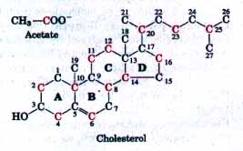
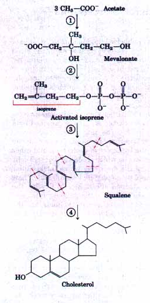
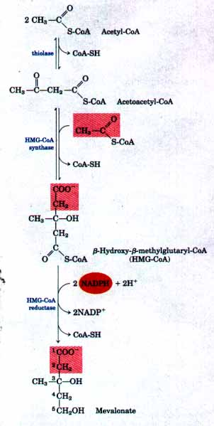
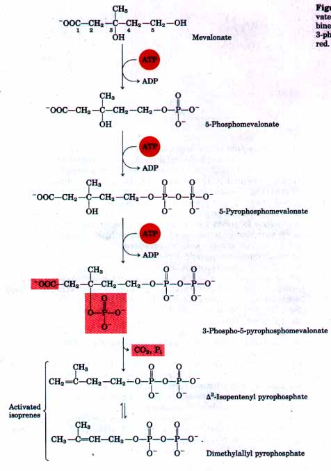
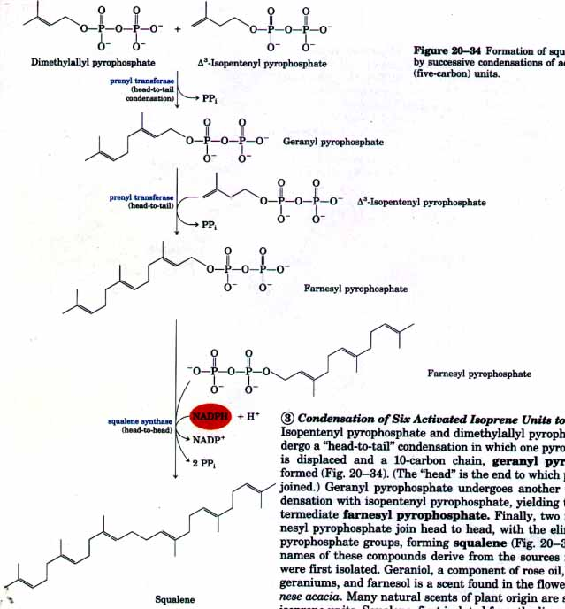
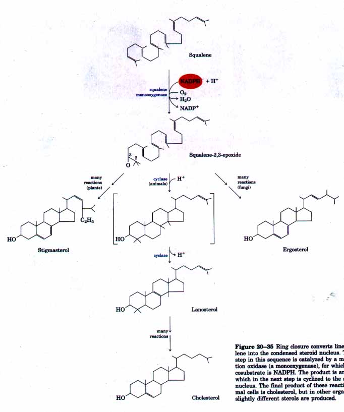

Cholesterol is doubtless the most publicized lipid in nature, because of the strong correlation between high levels of cholesterol in the blood and the incidence of diseases of the cardiovascular system in humans. Less well-advertised is the critical role of cholesterol in the structure of many membranes and as a precursor of steroid hormones and bile acids. Cholesterol is an essential molecule in many animals, including humans. It is not required in the mammalian diet because the liver can synthesize it from simple precursors.
Although the structure of this 27-carbon compound suggests complexity in its biosynthesis, all of its carbon atoms are provided by a single precursor-acetate (Fig. 20-30). The biosynthetic pathway to cholesterol is instructive in several respects. The study of this pathway has led to an understanding of the transport of cholesterol and other lipids between organs, of the process by which cholesterol enters cells (receptor-mediated endocytosis), of the means by which intracellular cholesterol production is influenced by dietary cholesterol, and of how failure to regulate cholesterol production affects health. Finally, the isoprene units that are key intermediates in the pathway from acetate to cholesterol are precursors to many other natural lipids, and the mechanisms by which isoprene units are polymerized are similar in all of these pathways.
We begin with an account of the major steps in the biosynthesis of cholesterol from acetate, then discuss the transport of cholesterol in the blood, its uptake by cells, and the regulation of cholesterol synthesis in normal individuals and in those with defects in cholesterol uptake or transport. We also consider other cellular components derived from cholesterol, such as bile acids and steroid hormones. Finally, the biosynthetic pathways to some of the many compounds derived from isoprene units, which share early steps with the pathway to cholesterol, are outlined to illustrate the extraordinary versatility of isoprenoid condensations in biosynthesis.
Cholesterol, like long-chain fatty acids, is made from acetyl-CoA, but the assembly plan is quite different in the two cases. In early experiments animals were fed acetate labeled with 14C in either the methyl carbon or the carboxyl carbon. The pattern of labeling in the cholesterol isolated from the two groups of animals (Fig. 20-30) provided the blueprint for working out the enzymatic steps in cholesterol biosynthesis. |
 Figure 20-30 The origin of the carbon atoms of cholesterol, deduced from tracer experiments with acetate labeled in the methyl carbon (black) or the carboxyl carbon (red). The individual rings in the fused-ring system are designated A through D. |
| The process occurs in four stages (Fig.
20-31). In stage 1 the three acetate units condense to
form a six-carbon intermediate, mevalonate. Stage 2
involves the conversion of mevalonate into activated
isoprene units, and stage 3 the polymerization of six
5-carbon isoprene units ta form the 30-carbon linear
structure of squalene. Finally (stage 4, the cyclization
of squalene forms the four rings of the steroid nucleus,
and a further series of changes (oxidations, removal or
migration of methyl groups) leads to the final product,
cholesterol. 1. Synthesis of Mevalonate from Acetate The first stage in cholesterol biosynthesis leads to the intermediate mevalonate (Fig. 20-32). Two molecules of acetyl-CoA condense, forming acetoacetyl-CoA, which condenses with a third molecule of acetyl-CoA to yield the six-carbon compound β-hydroxy-β-methylglutaryl-CoA (HMG-CoA). These first two reactions, catalyzed by thiolase and HMG-CoA synthase, respectively, are reversible and do not commit the cell to the synthesis of cholesterol or other isoprenoid compounds. The third reaction is the committed step: the reduction of HMGCoA to mevalonate, for which two molecules of NADPH each donate two electrons. HMG-CoA reductase, an integral membrane protein of the smooth endoplasmic reticulum, is the major point of regulation on the pathway to cholesterol, as we shall see. 2. ConUersion of MeUalonate to Two Activated Isoprenes In the next stage of cholesterol synthesis, three phosphate groups are transferred from three ATP molecules to mevalonate (Fig. 20-33). The phosphate attached to the C-3 hydroxyl group of mevalonate in the intermediate 3-phospho-5-pyrophosphomevalonate is a good leaving group; in the next step this phosphate and the nearby carboxyl group both leave, producing a double bond in the five-carbon product, Δ3-isopentenyl pyrophosphate. This is the first of the two activated isoprenes central to cholesterol formation. Isomerization of Δ3-isopentenyl pyrophosphate yields the second activated isoprene, dimethylallyl pyrophosphate (Fig. 20-33)
|
 Figure 20-31 A summary of cholesterol biosynthesis, showing the four stages discussed in the text. The isoprene units in squalene are set off by red dashed lines.  Figure 20-32 Formation of mevalonate from acetyl-CoA. The origin of C-1 and C-2 of mevalonate from acetyl-CoA is shown in red. |
 |
Figure 20-33 Conversion of mevalonate into activated isoprene units. Six of these units will combine to form squalene. The leaving groups of 3-phospho-5-pyrophosphomevalonate are shaded in red. |

Figure 20-34 Formation of squalene (30 carbons) by successive condensations of activated isoprene (five-carbon) units.
3. Condensation of Six ActiUated Isoprene Units to Form Squalene
Isopentenyl pyrophosphate and dimethylallyl pyrophosphate now undergo a "head-to-tail" condensation in which one pyrophosphate group is displaced and a 10-carbon chain, geranyl pyrophosphate, is formed (Fig. 20-34). (The "head" is the end to which pyrophosphate is joined.) Geranyl pyrophosphate undergoes another head-to-tail condensation with isopentenyl pyrophosphate, yielding the 15-carbon intermediate farnesyl pyrophosphate. Finally, two molecules of farnesyl pyrophosphate join head to head, with the elimination of both pyrophosphate groups, forming squalene (Fig. 20-34). The common names of these compounds derive from the sources from which they were first isolated. Geraniol, a component of rose oil, has the smell of geraniums, and farnesol is a scent found in the flowers of a tree, Farnese acacia. Many natural scents of plant origin are synthesized from isoprene units. Squalene, first isolated from the liver of sharks (genus Squalus), has 30 carbons, 24 in the main chain and 6 in the form of methyl group branches.
4.Conversion of Squalene to the Four-Iling Steroid Nucleus
When the squalene molecule is represented as in Figure 20-35, the relationship of its linear structure to the cyclic structure of the sterols is apparent. All of the sterols have four fused rings (the steroid nucleus) and all are alcohols, with a hydroxyl group at C-3; thus the name "sterol." The action of squalene monooxygenase adds one oxygen atom from O2 to the end of the squalene chain, forming an epoxide. This enzyme is another mixed-function oxidase (Box 20-1); NADPH reduces the other oxygen atom of O2 to H2O. The double bonds of the product, squalene2,3-epoxide, are positioned so that a remarkable concerted reaction can convert the linear squalene epoxide into a cyclic structure. In animal cells, this cyclization results in the formation of lanosterol, which contains the four rings characteristic of the steroid nucleus. Lanosterol is finally converted into cholesterol in a series of about 20 reactions, including the migration of some methyl groups and the removal of others. Elucidation of this extraordinary biosynthetic pathway, one of the most complex known, was accomplished by Konrad Bloch, Feodor Lynen, John Cornforth, and George Popjak in the late 1950s.
Cholesterol is the sterol characteristic of animal cells, but plants, fungi, and protists make other, closely related sterols instead of cholesterol, using the same synthetic pathway as far as squalene-2,3-epoxide. At this point the synthetic pathways diverge slightly, yielding other sterols: stigmasterol in many plants and ergosterol in fungi, for example (Fig. 20-35).

Figure 20-35 Ring closure converts linear squalene into the condensed steroid nucleus. The first step in this sequence is catalyzed by a mixed-function oxidase (a monooxygenase), for which the cosubstrate is NADPH. The product is an epoxide, which in the next step is cyclized to the steroid nucleus. The final product of these reactions in animal cells is cholesterol, but in other organisms, slightly different sterols are produced.